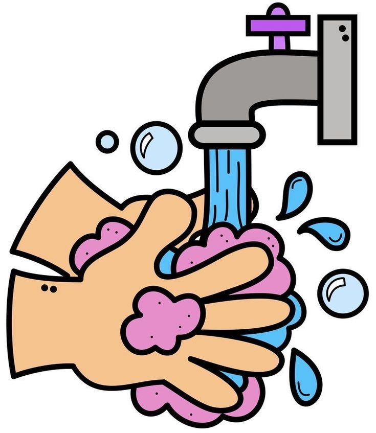

La higiene es fundamental para la salud y el bienestar. Mantener una buena higiene personal ayuda a prevenir enfermedades y mejora la calidad de vida. Este sitio proporciona información detallada sobre cómo incorporar hábitos saludables de higiene en tu vida diaria.
Una buena higiene personal es crucial para evitar la propagación de gérmenes, bacterias y virus que pueden causar infecciones. Además, mantener una higiene adecuada también mejora nuestra autoestima y bienestar general. Este sitio te guiará a través de los aspectos esenciales de la higiene personal y cómo llevarlos a cabo correctamente.
En cada una de estas secciones, aprenderás la mejor forma de cuidar de ti mismo y de tu entorno para garantizar una vida más sana y equilibrada.
